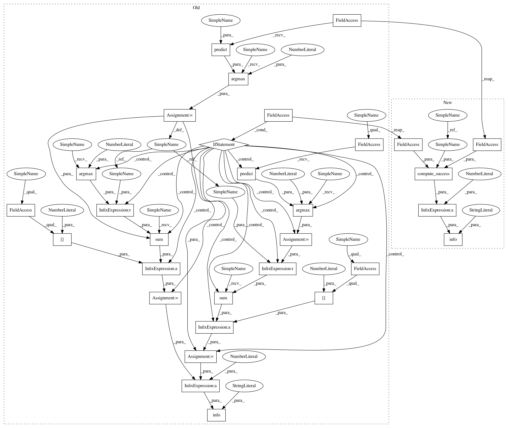

ae95a28d571e8e3e4cdbd22ca14f0c7b681f75bd,art/attacks/carlini.py,CarliniLInfMethod,generate,#CarliniLInfMethod#Any#,544
Before Change
x_adv_batch[~attack_success] = x_batch[~attack_success]
x_adv[batch_index_1:batch_index_2] = x_adv_batch
adv_preds = np.argmax(self.classifier.predict(x_adv), axis=1)
if self.targeted:
rate = np.sum(adv_preds == np.argmax(y, axis=1)) / x_adv.shape[0]
else:
preds = np.argmax(self.classifier.predict(x), axis=1)
rate = np.sum(adv_preds != preds) / x_adv.shape[0]
logger.info("Success rate of C&W attack: %.2f%%", 100 * rate)
return x_adv
def set_params(self, **kwargs):
After Change
:return: An array holding the adversarial examples.
:rtype: `np.ndarray`
x_adv = x.astype(NUMPY_DTYPE)
// Parse and save attack-specific parameters
params_cpy = dict(kwargs)
y = params_cpy.pop(str("y"), None)
self.set_params(**params_cpy)
// Assert that, if attack is targeted, y_val is provided:
if self.targeted and y is None:
raise ValueError("Target labels `y` need to be provided for a targeted attack.")
// No labels provided, use model prediction as correct class
if y is None:
y = get_labels_np_array(self.classifier.predict(x, logits=False))
// Compute perturbation with implicit batching
nb_batches = int(np.ceil(x_adv.shape[0] / float(self.batch_size)))
for batch_id in range(nb_batches):
logger.debug("Processing batch %i out of %i", batch_id, nb_batches)
batch_index_1, batch_index_2 = batch_id * self.batch_size, (batch_id + 1) * self.batch_size
x_batch = x_adv[batch_index_1:batch_index_2]
y_batch = y[batch_index_1:batch_index_2]
(clip_min_per_pixel, clip_max_per_pixel) = self.classifier.clip_values
clip_min = np.clip(x_batch - self.eps, clip_min_per_pixel, clip_max_per_pixel)
clip_max = np.clip(x_batch + self.eps, clip_min_per_pixel, clip_max_per_pixel)
// The optimization is performed in tanh space to keep the
// adversarial images bounded from clip_min and clip_max.
x_batch_tanh = original_to_tanh(x_batch, clip_min, clip_max, self._tanh_smoother)
// Initialize perturbation in tanh space:
x_adv_batch = x_batch.copy()
x_adv_batch_tanh = x_batch_tanh.copy()
// Initialize optimization:
z, loss = self._loss(x_adv_batch, y_batch)
attack_success = (loss <= 0)
lr = self.learning_rate * np.ones(x_batch.shape[0])
for it in range(self.max_iter):
logger.debug("Iteration step %i out of %i", it, self.max_iter)
logger.debug("Average Loss: %f", np.mean(loss))
logger.debug("Successful attack samples: %i out of %i", int(np.sum(attack_success)), x_batch.shape[0])
// only continue optimization for those samples where attack hasn"t succeeded yet:
active = ~attack_success
if np.sum(active) == 0:
break
// compute gradient:
logger.debug("Compute loss gradient")
perturbation_tanh = -self._gradient_of_loss(z[active], y_batch[active], x_adv_batch[active],
x_adv_batch_tanh[active], clip_min[active], clip_max[active])
// perform line search to optimize perturbation
// first, halve the learning rate until perturbation actually decreases the loss:
prev_loss = loss.copy()
best_loss = loss.copy()
best_lr = np.zeros(x_batch.shape[0])
halving = np.zeros(x_batch.shape[0])
for h in range(self.max_halving):
logger.debug("Perform halving iteration %i out of %i", h, self.max_halving)
do_halving = (loss[active] >= prev_loss[active])
logger.debug("Halving to be performed on %i samples", int(np.sum(do_halving)))
if np.sum(do_halving) == 0:
break
active_and_do_halving = active.copy()
active_and_do_halving[active] = do_halving
lr_mult = lr[active_and_do_halving]
for _ in range(len(x.shape)-1):
lr_mult = lr_mult[:, np.newaxis]
new_x_adv_batch_tanh = x_adv_batch_tanh[active_and_do_halving] + \
lr_mult * perturbation_tanh[do_halving]
new_x_adv_batch = tanh_to_original(new_x_adv_batch_tanh,
clip_min[active_and_do_halving],
clip_max[active_and_do_halving])
_, loss[active_and_do_halving] = self._loss(new_x_adv_batch, y_batch[active_and_do_halving])
logger.debug("New Average Loss: %f", np.mean(loss))
logger.debug("Loss: %s", str(loss))
logger.debug("Prev_loss: %s", str(prev_loss))
logger.debug("Best_loss: %s", str(best_loss))
best_lr[loss < best_loss] = lr[loss < best_loss]
best_loss[loss < best_loss] = loss[loss < best_loss]
lr[active_and_do_halving] /= 2
halving[active_and_do_halving] += 1
lr[active] *= 2
// if no halving was actually required, double the learning rate as long as this
// decreases the loss:
for d in range(self.max_doubling):
logger.debug("Perform doubling iteration %i out of %i", d, self.max_doubling)
do_doubling = (halving[active] == 1) & (loss[active] <= best_loss[active])
logger.debug("Doubling to be performed on %i samples", int(np.sum(do_doubling)))
if np.sum(do_doubling) == 0:
break
active_and_do_doubling = active.copy()
active_and_do_doubling[active] = do_doubling
lr[active_and_do_doubling] *= 2
lr_mult = lr[active_and_do_doubling]
for _ in range(len(x.shape)-1):
lr_mult = lr_mult[:, np.newaxis]
new_x_adv_batch_tanh = x_adv_batch_tanh[active_and_do_doubling] + \
lr_mult * perturbation_tanh[do_doubling]
new_x_adv_batch = tanh_to_original(new_x_adv_batch_tanh,
clip_min[active_and_do_doubling],
clip_max[active_and_do_doubling])
_, loss[active_and_do_doubling] = self._loss(new_x_adv_batch,
y_batch[active_and_do_doubling])
logger.debug("New Average Loss: %f", np.mean(loss))
best_lr[loss < best_loss] = lr[loss < best_loss]
best_loss[loss < best_loss] = loss[loss < best_loss]
lr[halving == 1] /= 2
update_adv = (best_lr[active] > 0)
logger.debug("Number of adversarial samples to be finally updated: %i", int(np.sum(update_adv)))
if np.sum(update_adv) > 0:
active_and_update_adv = active.copy()
active_and_update_adv[active] = update_adv
best_lr_mult = best_lr[active_and_update_adv]
for _ in range(len(x.shape)-1):
best_lr_mult = best_lr_mult[:, np.newaxis]
x_adv_batch_tanh[active_and_update_adv] = x_adv_batch_tanh[active_and_update_adv] + \
best_lr_mult * perturbation_tanh[update_adv]
x_adv_batch[active_and_update_adv] = tanh_to_original(x_adv_batch_tanh[active_and_update_adv],
clip_min[active_and_update_adv],
clip_max[active_and_update_adv])
z[active_and_update_adv], loss[active_and_update_adv] = self._loss(
x_adv_batch[active_and_update_adv], y_batch[active_and_update_adv])
attack_success = (loss <= 0)
// Update depending on attack success:
x_adv_batch[~attack_success] = x_batch[~attack_success]
x_adv[batch_index_1:batch_index_2] = x_adv_batch
logger.info("Success rate of C&W L_inf attack: %.2f%%",
100 * compute_success(self.classifier, x, y, x_adv, self.targeted))
return x_adv
def set_params(self, **kwargs):
In pattern: SUPERPATTERN
Frequency: 4
Non-data size: 30
Instances
Project Name: IBM/adversarial-robustness-toolbox
Commit Name: ae95a28d571e8e3e4cdbd22ca14f0c7b681f75bd
Time: 2019-04-25
Author: Maria-Irina.Nicolae@ibm.com
File Name: art/attacks/carlini.py
Class Name: CarliniLInfMethod
Method Name: generate
Project Name: IBM/adversarial-robustness-toolbox
Commit Name: ae95a28d571e8e3e4cdbd22ca14f0c7b681f75bd
Time: 2019-04-25
Author: Maria-Irina.Nicolae@ibm.com
File Name: art/attacks/carlini.py
Class Name: CarliniLInfMethod
Method Name: generate
Project Name: IBM/adversarial-robustness-toolbox
Commit Name: 1c8990edea80ea31b78618fb4e8ab01396edc95b
Time: 2019-04-25
Author: Maria-Irina.Nicolae@ibm.com
File Name: art/attacks/carlini.py
Class Name: CarliniL2Method
Method Name: generate
Project Name: IBM/adversarial-robustness-toolbox
Commit Name: ae95a28d571e8e3e4cdbd22ca14f0c7b681f75bd
Time: 2019-04-25
Author: Maria-Irina.Nicolae@ibm.com
File Name: art/attacks/carlini.py
Class Name: CarliniL2Method
Method Name: generate
Project Name: IBM/adversarial-robustness-toolbox
Commit Name: 1c8990edea80ea31b78618fb4e8ab01396edc95b
Time: 2019-04-25
Author: Maria-Irina.Nicolae@ibm.com
File Name: art/attacks/carlini.py
Class Name: CarliniLInfMethod
Method Name: generate